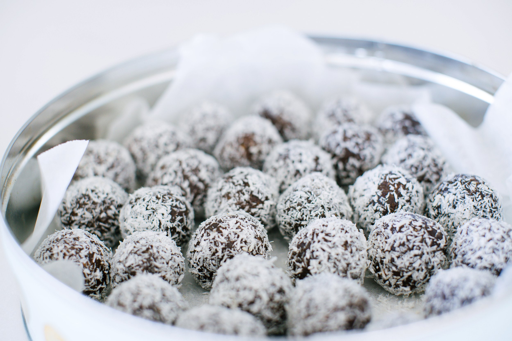
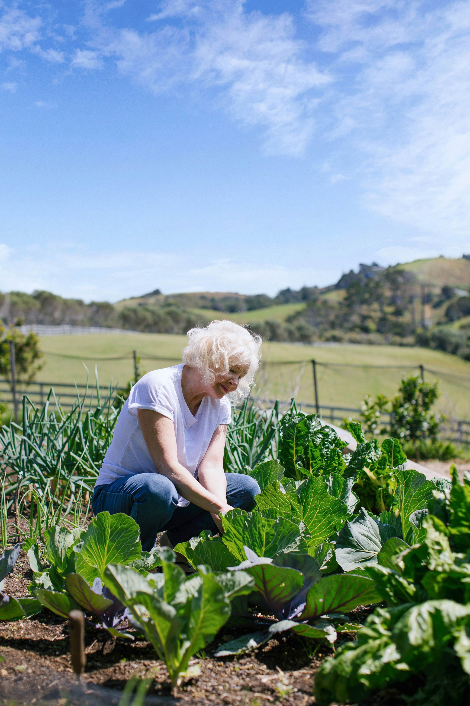

A growing collection
Recipes for nourishing days.
Simple, seasonal cooking — the kind that feels easy when energy is low, and rewards the effort when you’re back in the kitchen. Each recipe is chosen with healing in mind.
-

Spiced Eggs with Squash
Light, easily digestible, gently warming — a perfect breakfast for low-appetite mornings.
-

Garam Masala
A warming, home-ground blend — better than anything you’ll find pre-made.
-
Coconut Mussels with Lime and Chilli
Hot, sour, sweet, and salty — built for an appetite that’s only just returning.
-

Home-made Full-fat Cottage Cheese
Real ingredients only — no preservatives, no thickeners, no stabilisers.